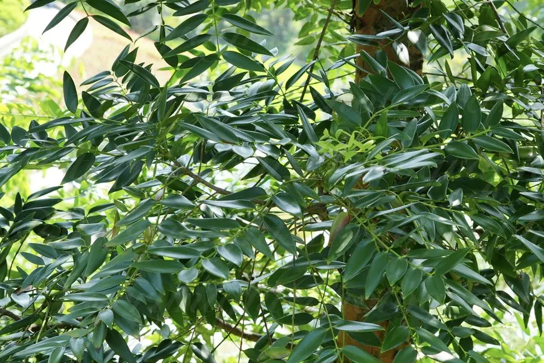

乔木 · 植物界
贝壳杉 Agathis dammara

原产东南亚的大型常绿针叶树，树干通直，树皮可渗出达玛树脂，木材与树脂均有重要经济价值。
- 分类
- 门裸子植物门纲松柏纲目松柏目科南洋杉科属贝壳杉属
- 栖息环境
- 海拔 800 米以下的热带雨林，喜高温多湿、光照充足
- 地理分布
- 原产菲律宾、马来西亚、印度尼西亚等地，中国华南引种栽培
- 保护级别
- 暂无评估；中国未列入国家重点保护野生植物名录
物种志
贝壳杉为常绿针叶大乔木，高可达 45 m，树干通直，树皮灰褐色、呈块片状剥落；叶片对生或近对生，厚革质，椭圆形至披针形，长 5–12 cm。雌雄同株，雄球花圆柱形，雌球花卵形；球果木质，近球形，成熟时开裂散出带翅种子。
贝壳杉原产菲律宾、马来西亚、印度尼西亚等东南亚热带地区，中国华南地区有引种，喜高温多湿、光照充足，适宜深厚肥沃的酸性土壤。树干可分泌达玛树脂，用于油漆、清漆与香料；木材纹理直、易加工，可供建筑、家具与造船用。由于长期采伐，野生贝壳杉资源减少，东南亚一些国家已限制采伐，栽培时需注意可持续利用。
形态与习性
- 株高可达 45 m，树干通直
- 花期春季，雌雄同株
- 球果木质近球形，翌年成熟
- 光照喜光，不耐长期荫蔽
- 水分喜湿润，怕积水
- 主要用途建筑与家具用材、达玛树脂
趣味知识
- 贝壳杉树皮可渗出达玛树脂，是制作清漆与油漆的原料。
- 贝壳杉树干通直高大，是东南亚热带雨林中的大型针叶树。
- 贝壳杉木材纹理直、易加工，可供建筑、家具与造船用。